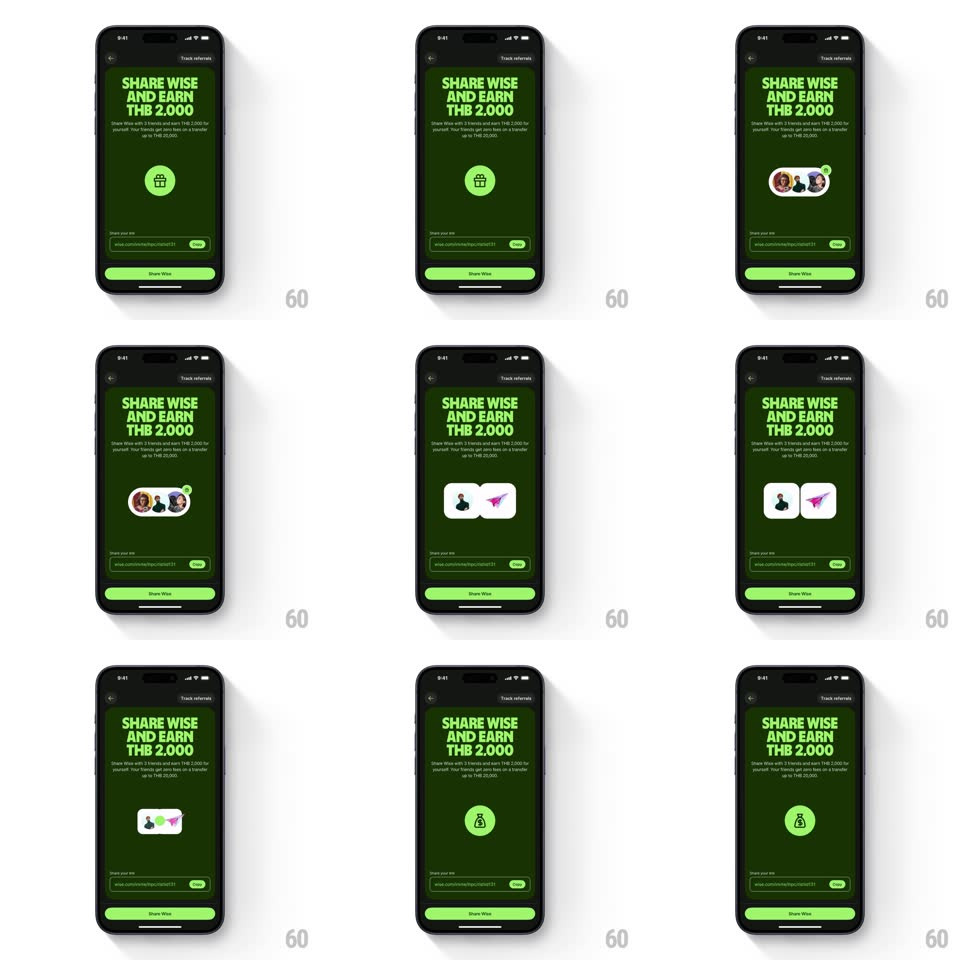

Media
Frame-by-frame

Rebuild this animation 1:1: Wise's referral loop - on the "SHARE WISE AND EARN THB 2,000" screen, the center icon cycles through a morphing sequence: gift box to friend avatars to a paper plane to a money bag.

Rebuild this animation 1:1: Wise's referral loop - on the "SHARE WISE AND EARN THB 2,000" screen, the center icon cycles through a morphing sequence: gift box to friend avatars to a paper plane to a money bag. ## Integration Integration: stack-agnostic spec - springs given as stiffness/damping, timed motions as duration + curve; map every value to your framework and animation library of choice. ## Scene A dark-green referral screen: the headline and reward copy up top, a referral link field with copy button and a Share Wise button at the bottom, and a center stage where the looping icon animation plays. ## Motion spec Pattern: looping four-stage icon morph, ~1.2s per stage. - Gift: a gift box in a green circle fades/scales in (scale 0.8 -> 1 + fade, 250ms). - Avatars: the circle morphs into a row of three overlapping friend avatars (each pops in 0.6 -> 1, spring ~420/18, staggered 80ms) and a green check badge pops on the last one (spring ~460/16). - Plane: the avatars collapse into a person tile plus a paper-plane tile; the plane launches (translate up-right ~30px with a slight rotate, 350ms, ease-out). - Money bag: the plane resolves into a money-bag icon in the green circle (scale 0.7 -> 1 + fade, 300ms), holds, then the loop restarts with a quick fade (200ms). ## Calibration - Each stage is fully readable before morphing - no mid-morph ambiguity. - The green circle is the visual anchor; stage changes re-form around it. ## Reduced motion Static gift icon; no loop. ## Don't miss - The loop never stops while the screen is visible. - Copy, link field, and button are static - all motion is in the center stage.